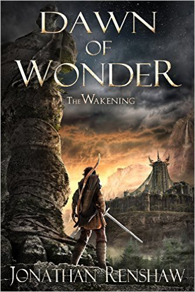

"Dawn of Wonder"
- Read on 2018-06-10
- Rating: ️️️️️
- Format: 🎧 (29 hours 31 minutes)
Young Aedan's world is shaken to its core by some foreign visitors. He embarks on a journey (and new life) to right the wrongs. An abusive father, bullies, subversive politicians, and a secretive hierarchy all complicate things. What a short and boring summary of an overall good book.
I wanted a bit more character development of a couple people (Aedan's father, and Kalry). I also thought the book could have ended on three separate occasions, and I would have been okay with that. Because of that, it felt like the book didn't build to a single apex, but multiple - and that was weird. Regardless, if the second book were already available, I'd start it immediately.
- Prior: The Survivor
- Next: Shoe Dog